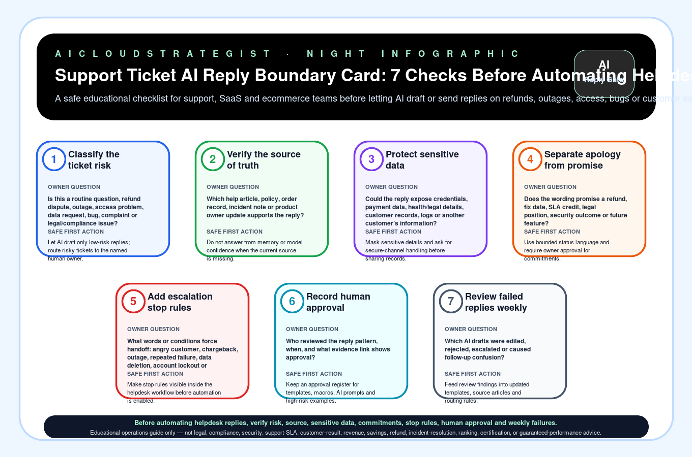

Support Ticket AI Reply Boundary Card: 7 Checks Before Automating Helpdesk Responses
A safe educational checklist for support, SaaS and ecommerce teams before letting AI draft or send replies on refunds, outages, access, bugs or customer escalations.

Seven checks before AI sends or drafts support replies
| # | Check | Owner question | Safe first action |
|---|---|---|---|
| 1 | Classify the ticket risk | Is this a routine question, refund dispute, outage, access problem, data request, bug, complaint or legal/compliance issue? | Let AI draft only low-risk replies; route risky tickets to the named human owner. |
| 2 | Verify the source of truth | Which help article, policy, order record, incident note or product owner update supports the reply? | Do not answer from memory or model confidence when the current source is missing. |
| 3 | Protect sensitive data | Could the reply expose credentials, payment data, health/legal details, customer records, logs or another customer’s information? | Mask sensitive details and ask for secure-channel handling before sharing records. |
| 4 | Separate apology from promise | Does the wording promise a refund, fix date, SLA credit, legal position, security outcome or future feature? | Use bounded status language and require owner approval for commitments. |
| 5 | Add escalation stop rules | What words or conditions force handoff: angry customer, chargeback, outage, repeated failure, data deletion, account lockout or regulated request? | Make stop rules visible inside the helpdesk workflow before automation is enabled. |
| 6 | Record human approval | Who reviewed the reply pattern, when, and what evidence link shows approval? | Keep an approval register for templates, macros, AI prompts and high-risk examples. |
| 7 | Review failed replies weekly | Which AI drafts were edited, rejected, escalated or caused follow-up confusion? | Feed review findings into updated templates, source articles and routing rules. |
When this should become a paid diagnostic
If support tickets, refunds, outages, account access, sensitive data, manual macros or AI chatbot drafts are creating risk or delays, AICS can review sources, stop rules, owner approvals and weekly failure evidence without asking for credentials or customer data in the first review.
Truth boundary
Educational operations guide only — not legal, compliance, security, support-SLA, customer-result, revenue, savings, refund, incident-resolution, ranking, certification, or guaranteed-performance advice.
No customer, SLA, revenue, savings, compliance, legal, refund, security, ranking or incident-resolution claims are made by this publication.